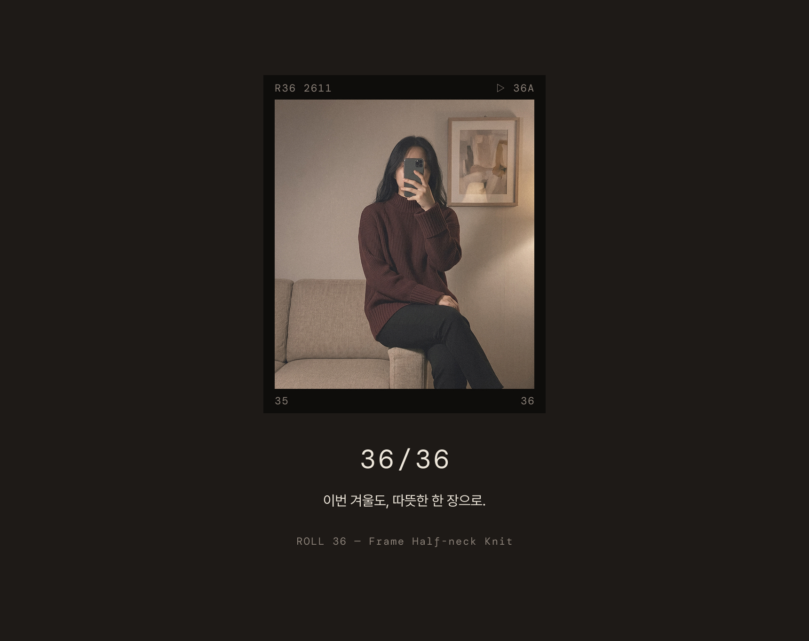
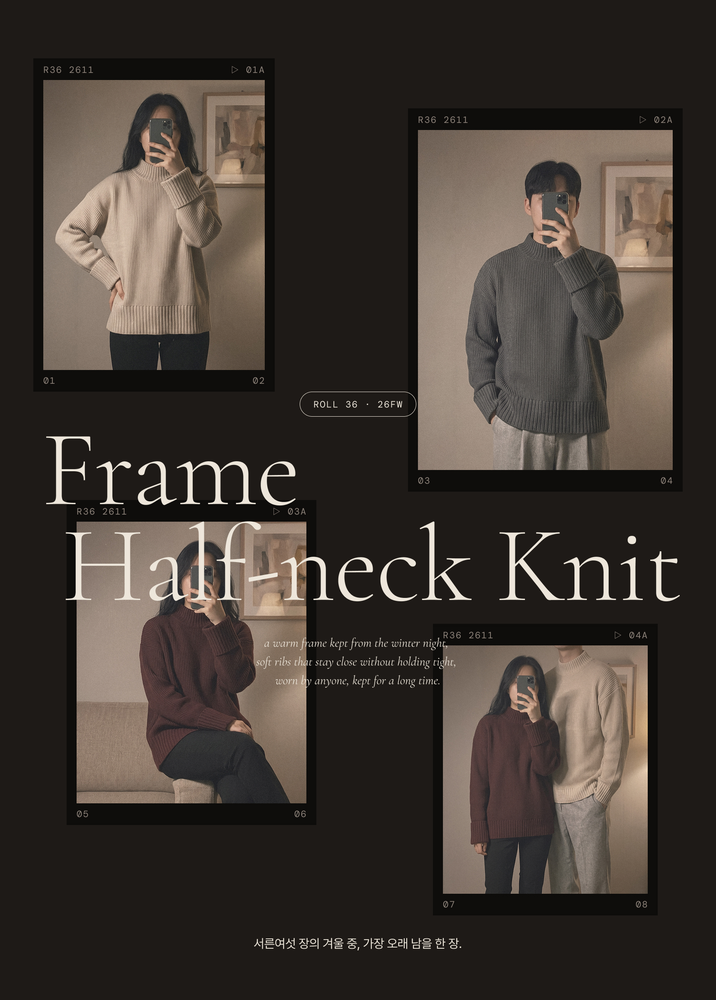
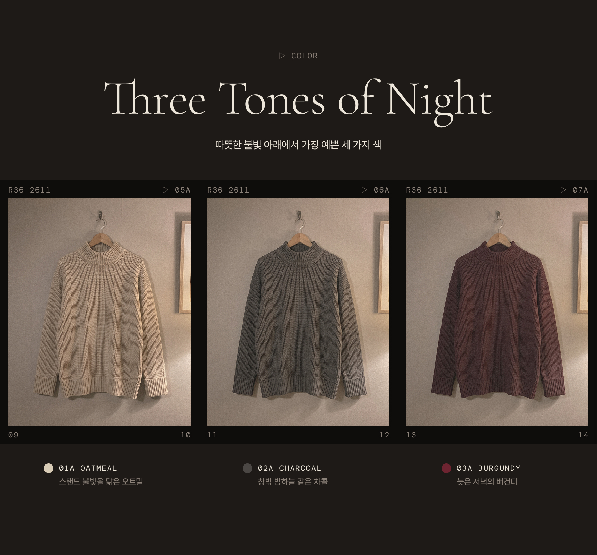
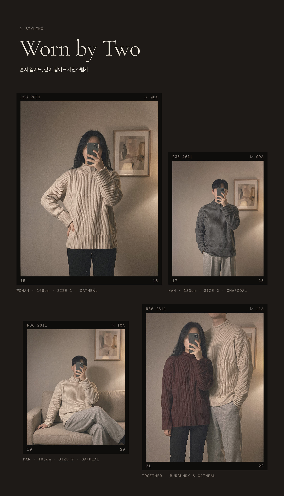
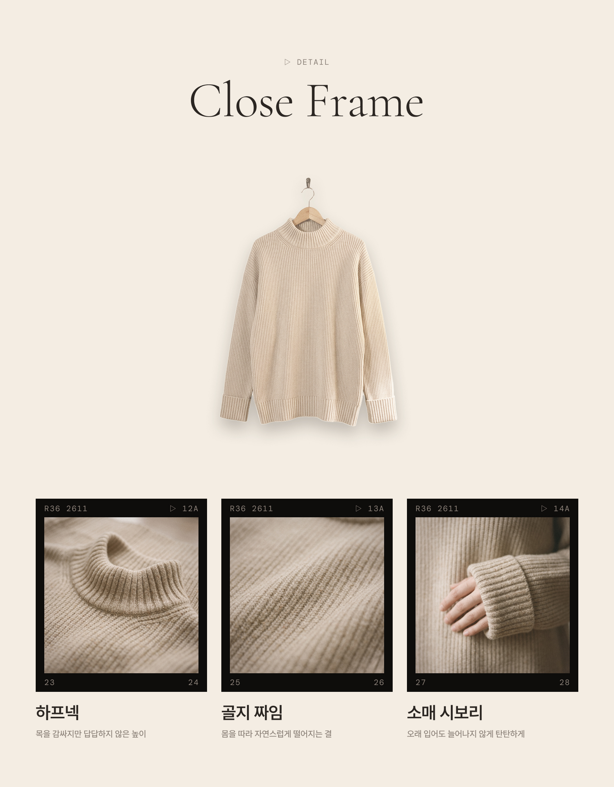
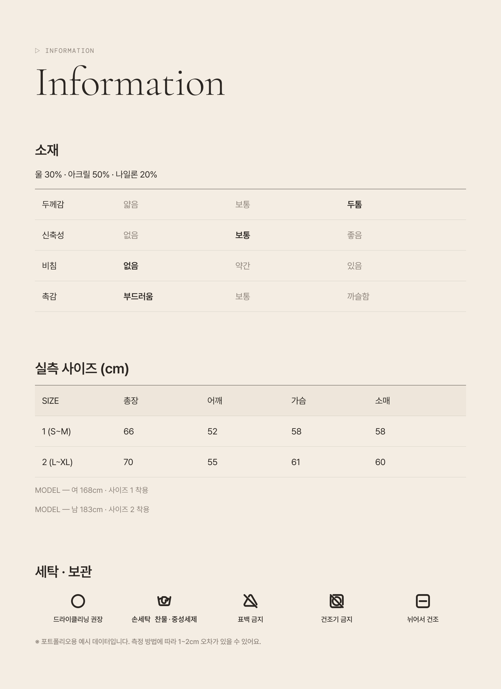

PROJECT 03 — DETAIL PAGE
ROLL 36
HALF-NECK KNIT.
서른여섯 장의 겨울 중, 가장 오래 남을 한 장.
필름 한 롤에 담은 겨울밤처럼, 남녀 누구나 입는 하프넥 니트를 보여 주는 패션 상세페이지입니다.

01 / OVERVIEW
OVERVIEW.
옷을 설명하기 전에, 분위기를 먼저 입혔습니다.
감도 높은 패션 브랜드의 상세페이지는 정보보다 무드로 먼저 기억됩니다. ROLL 36은 '필름 한 롤'을 콘셉트로, 모든 사진을 같은 필름 프레임에 담고 컷마다 번호를 이어 붙였습니다. 표지의 ROLL 36에서 시작해 마지막 36/36으로 끝나도록 해, 스크롤 전체가 한 롤의 필름처럼 읽히게 했습니다. 이전 프로젝트의 긴 스크롤이 지루하게 느껴져, 이번에는 6개 섹션으로 압축했습니다.
- 타깃 — 따뜻한 무드의 기본 니트를 찾는 20~30대 남녀
- 콘셉트 — 필름 한 롤에 담은 겨울밤, 누구나 오래 입는 한 장
- 규격 — 860px 상세페이지, 6개 섹션 (Figma 2배 1720px 작업)
02 / STORY
STORY.
어두운 밤의 무드로 시작해, 밝은 정보로 확인시키고, 다시 밤으로 닫히는 흐름을 설계했습니다.
-
01
첫인상
네 장의 거울 셀카를 필름 콜라주로 겹치고, 그 위에 큰 세리프 제목을 올려 잡지 표지처럼 시작합니다.
-
02
상상
세 가지 색을 한 줄의 필름으로 보여 주고, 남녀 착용 컷마다 키와 사이즈를 적어 입은 모습을 떠올리게 합니다.
-
03
확인
배경을 크림색으로 바꿔 넥, 짜임, 소매 디테일과 소재, 실측 사이즈, 세탁 정보를 차분히 정리했습니다.
-
04
여운
마지막 프레임 한 장과 36/36으로, 필름 한 롤을 다 찍은 듯한 끝맺음을 남깁니다.
03 / DESIGN SYSTEM
DESIGN.
COLOR
- WARM CHARCOAL#1E1A17 · 무드 섹션 배경
- FILM BLACK#0E0C0B · 필름 프레임
- CREAM#F3EDE3 · 정보 섹션 배경
- INK#2B2622 · 밝은 배경 글자
- PAPER#EDE6DA · 어두운 배경 글자
- DUST#8C8279 · 라벨, 캡션
TYPOGRAPHY
Cormorant Garamond
DISPLAY — 영문 제목, 시
DM Mono
CODE — 필름 번호, 캡션
Pretendard
TEXT — 한글 제목, 본문
따뜻한 차콜과 크림 두 가지 배경만으로 '밤의 무드'와 '낮의 정보'를 나눴습니다. 제품 색인 오트밀, 차콜, 버건디가 배경과 겹치지 않도록 브랜드 색은 모두 채도를 낮췄고, 모든 사진에 같은 보정 프리셋을 적용해 한 롤로 찍은 듯한 톤을 맞췄습니다.
04 / DETAIL PAGE
DETAIL.
실제 쇼핑몰과 같은 860px 폭으로 전체 상세페이지를 그대로 보여 드립니다.





05 / PROCESS
PROCESS.
-
01
기획
패션 브랜드의 무드를 참고해 콘셉트와 6개 섹션을 정하고, 카피와 와이어프레임을 먼저 정리했습니다.
-
02
이미지
첫 컷을 기준 이미지로 첨부해 같은 니트, 같은 방, 같은 조명으로 착용·제품·디테일 컷 11장을 만들었습니다.
-
03
보정
Camera Raw 프리셋 하나로 11장의 톤과 필름 그레인을 맞추고, 워터마크 제거와 제품 누끼를 진행했습니다.
-
04
디자인
필름 프레임, 컬러칩, 카드, 표 줄을 컴포넌트로 만들고 자동 레이아웃으로 섹션을 쌓아 수정이 쉽게 했습니다.
06 / DESIGN POINTS
POINTS.
-
POINT 01
이어지는 필름 번호
사진이 많아질수록 페이지가 흩어진 이미지 모음처럼 보일 수 있습니다.
01A부터 36A까지 프레임 번호를 섹션을 넘어 이어 붙여, 한 롤의 필름으로 묶었습니다.
-
POINT 02
사진과 표가 같은 숫자
착용 컷만으로는 내 몸에 어떻게 맞을지 알기 어렵습니다.
스타일링 캡션의 키·사이즈를 상품 정보의 모델 정보, 실측 표와 같은 숫자로 맞춰 신뢰를 이었습니다.
-
POINT 03
한눈에 읽히는 소재 표
두께감, 신축성 같은 정보는 표 전체를 읽어야 알 수 있습니다.
선택된 값만 진하게 표시해, 훑어보기만 해도 '도톰하고 부드럽다'가 전달되게 했습니다.
-
POINT 04
처음부터 컴포넌트로
이전 작업에서는 자동 레이아웃을 마지막에 적용해 수정이 번거로웠습니다.
필름 프레임 하나를 원본으로 모든 사진에 재사용해, 원본만 고치면 페이지 전체가 함께 바뀌게 했습니다.
이미지: Google Gemini로 생성 후 Photoshop 보정·누끼 / 아이콘: Tabler Icons (MIT) / 폰트: Cormorant Garamond, DM Mono, Pretendard (SIL OFL). 사이즈·소재 값은 예시 데이터이며, ROLL 36은 포트폴리오를 위한 가상 브랜드입니다.
WHAT I
LEARNED.
(작성 예정 — 이번 작업에서 배운 점을 직접 적어 주세요.)
© 2026 Soomln. All rights reserved.
BACK TO TOP ↑